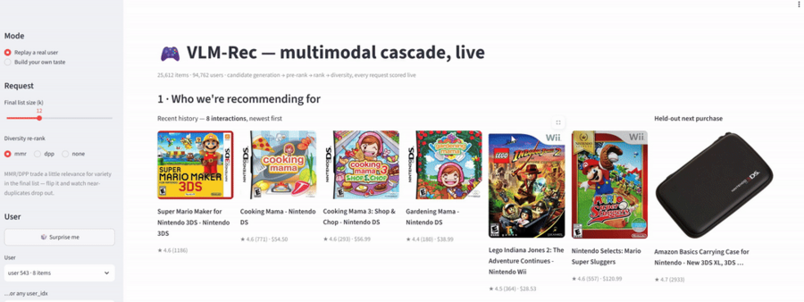

Work outside the papers, built on one GPU. Each links to the code, and where they
exist, to the training runs, so the numbers can be checked rather than taken on trust.
Personal Work
VQA-RLVR: post-training a vision-language model, and auditing the
benchmark
QLoRA supervised fine-tuning followed by GRPO on Qwen3-VL, evaluated on
VQAv2, GQA, CLEVR, and TextVQA. 2026
Reinforcement learning with verifiable rewards is how a model is taught
to reason before it answers. Run end to end here, it lifts accuracy on questions that need
reasoning, and the gain carries to a benchmark the model never trained on.
Reasoning mode
VQAv2
GQA
TextVQA (unseen)
Zero-shot
64.9
51.9
70.2
After GRPO
69.5
53.9
72.7
Qwen3-VL-2B, full evaluation sets. Total cost: nothing in GPU time,
19 cents for the judge.
The more interesting result was about the scoring. Exact match calls an
answer wrong whenever the wording differs, and an LLM judge showed that between 23% and 49% of
those failures were correct answers. That matters because the field reports a penalty for
letting models think out loud, and once the grading is fixed, most of that penalty is not
there. A second surprise pointed the same way: training on synthetic CLEVR alone, with no
natural images at all, produced the largest gain on unseen data and damaged nothing.
Multimodal Retrieval and Ranking for Cold-Start Recommendation
A full retrieval-and-ranking stack on Amazon Reviews 2023.
2025
The system takes a shopper's history and returns a ranked feed, narrowing
the catalogue through retrieval, pre-ranking, ranking, and a diversity pass. It is built to
handle the case every store faces on its worst day: a product nobody has bought yet. The usual
item ID carries no information about a new listing, so the recommendation falls back to
whatever is popular. Its picture and description carry plenty.
Retrieval narrows millions of candidates to hundreds, ranking orders them, and
the item profiles generated by a vision-language model feed both stages.
Feeding the retrieval tower images and text instead of item IDs alone
lifted Recall@100 by 66%, and by 81% on exactly the cold-start items the design was meant to
rescue. The result held on a catalogue eight times larger, reached by changing one config file,
and the whole cascade answers in 10 to 16 ms on CPU.
The repository carries the full ablation, along with the cascade bug
where a ranker scoring well on its own was making the final list worse.

A shopper's recent purchases, and on the right the item they actually bought
next, held out for the system to predict.
A small vision-language model for clinical questions
SigLIP paired with SmolLM2, roughly 445M parameters, trained from scratch
on 200k image and text pairs. 2025
Six variants, built to isolate what actually mattered rather than to
report one number: all four corpora against one domain at a time, and LoRA against full
fine-tuning. LoRA at rank 16 held 97% of full fine-tuning accuracy while training a third of
the parameters. The lesson that transferred to later work came from the data mix. Without
temperature-weighted sampling the largest corpus took 96.5% of every batch and drowned the
specialist sets; at T = 0.5 that fell to 79%.
Two data-curation pipelines with a foundation model in the loop.
2026
Our results had stopped improving, and the reason was not the
architecture. It was that annotation is slow, and slow annotation means noisy labels. One
pipeline re-segments thousands of preclinical MRI timepoints with MedSAM2 and cross-checks each
result against geometric sanity tests, so a human reviewer only has to keep, accept, or edit.
The other replaced whole-slide annotation across a five-stain pathology cohort.
Swapping the cleaned labels into an unchanged downstream model moved
prognosis AUROC from 0.70 to 0.90, at about a fifth of the annotation time the lab had
budgeted. It also surfaced the strongest signal in the dataset, an immune-cell ratio the
previous labels had hidden completely, and caught a contaminated slide before it reached the
cohort statistics.